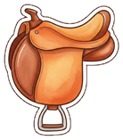

So geht’s: Krone/Sattel sitzen schon als Startwerte auf jeder Figur. Ziehen zum Verschieben (oder aus der Leiste neu auflegen). Feinjustage nach Klick: Pfeiltasten (Shift = grob), Q/E = Sattel drehen, +/− = Größe.

🏇 Sattel (ziehen)„Fertig“ lädt kalibrierung.json herunter – bitte nach
D:\Projekte_D\Modellhof_game\ speichern/verschieben, dann übernimmt Claude die Werte exakt.